개인 프로젝트 · 룰 기반 vs AI 탐지 비교 1단계
WAF — OWASP Coraza + CRS vs AI
개인 프로젝트Colab 실행 완료
쇼핑몰 HTTP 요청 데이터셋 하나를 룰 기반 WAF(OWASP Coraza + Core Rule Set 4.25)와 AI 모델 2개에 똑같이 넣고, 둘 다 처음 보는 시험 집합에서 몇 %를 잡고(탐지율), 정상 요청을 몇 % 막는지(오탐률) 비교했습니다.
숫자만 보면 AI가 압승이지만, 차이의 대부분은 CRS가 원래 보지 않는 "이 쇼핑몰에서만 비정상인 값"(예: 버튼 이름 B1= 대신 B1A=)에서 나왔습니다. 그래서 결론은 "AI가 룰을 대체한다"가 아니라 "룰은 범용 공격, AI는 사이트 전용 이상 탐지 — 함께 쓰는 관계"입니다. 자세한 근거는 6장에 있습니다.
1. 실험 구성
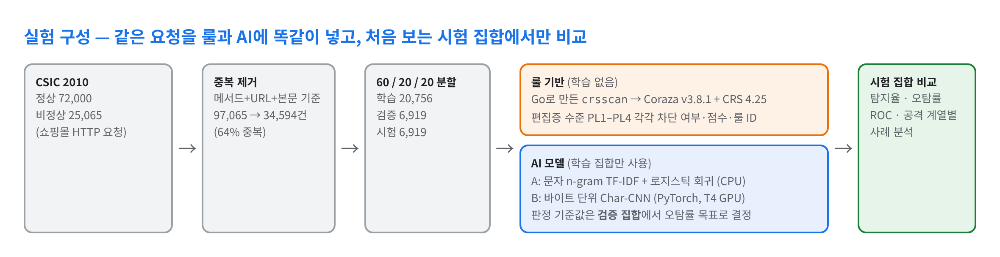
| 구분 | 사용한 것 | 선택 이유 |
|---|---|---|
| 데이터 | HTTP DATASET CSIC 2010 (스페인 전자상거래 사이트 요청, 정상 72,000 / 비정상 25,065) | WAF 연구에서 가장 많이 쓰이는 공개 데이터라 다른 결과와 비교 가능 |
| 룰 기반 | OWASP Coraza v3.8.1 + coraza-coreruleset v4.25.0 (CRS 4.25 LTS) | ModSecurity와 같은 CRS 룰을 그대로 쓰고, Go 라이브러리라 Colab에서 바로 빌드 가능 |
| AI 모델 A | 문자 2–5글자 조각 TF-IDF + 로지스틱 회귀 (scikit-learn, CPU) | 단순하고 "어떤 글자 조각을 보고 판단했는지" 확인할 수 있는 기준선 |
| AI 모델 B | 바이트 단위 문자 CNN (PyTorch, 커널 3·5·7, 최대 512바이트) | 특성 설계 없이 원문 그대로 학습하는 딥러닝 방식 |
| 실행 환경 | Google Colab 무료 T4 GPU, Python 3.13, torch 2.14, Go 1.25.14 | 개인 PC에 GPU가 없음. 노트북 하나로 처음부터 끝까지 재현 |
노트북: waf_lab_phase1.ipynb (Colab에서 "노트 업로드" → T4 GPU 선택 → 모두 실행)
2. Colab 실행 과정
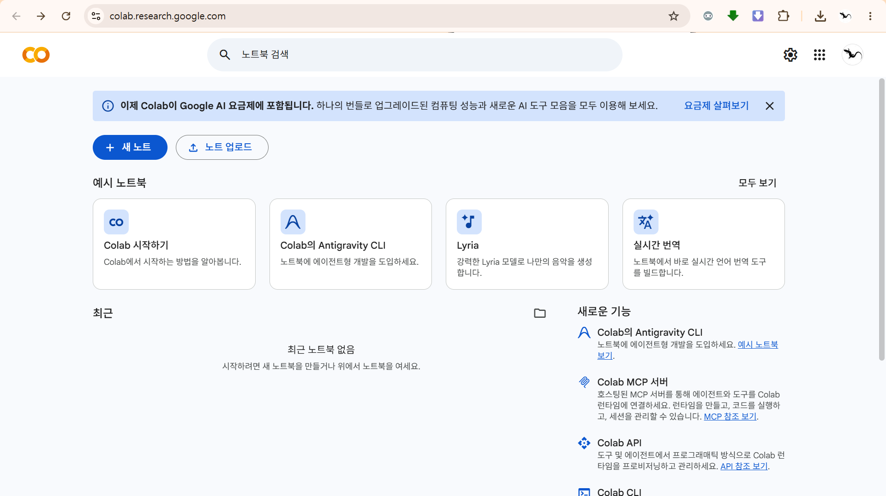
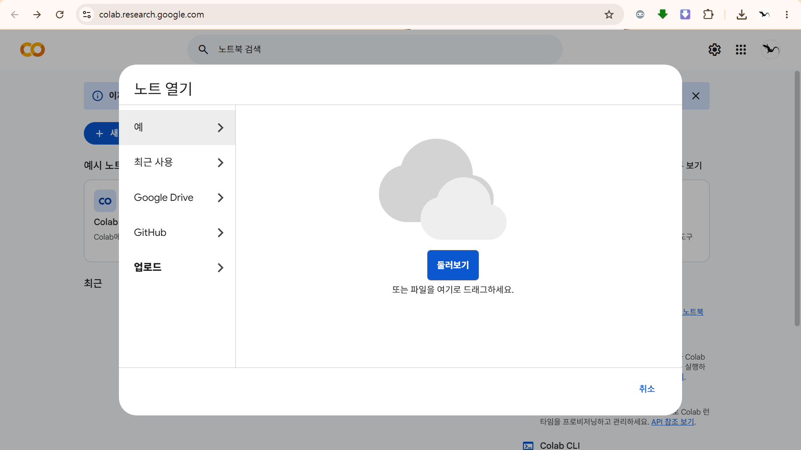
waf_lab_phase1.ipynb 선택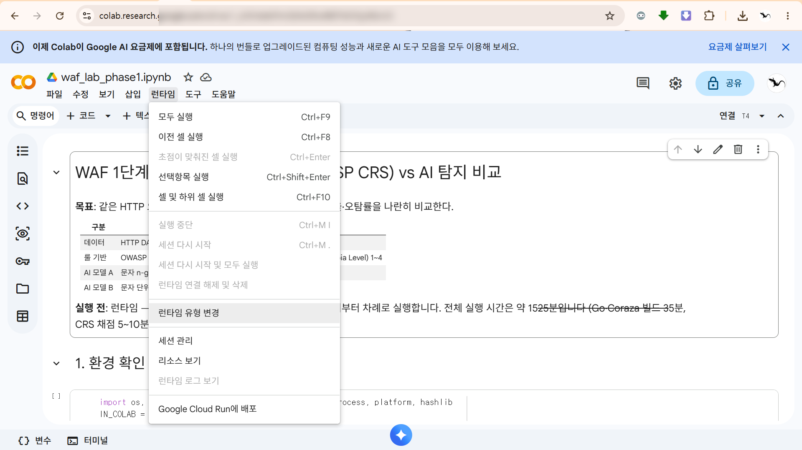
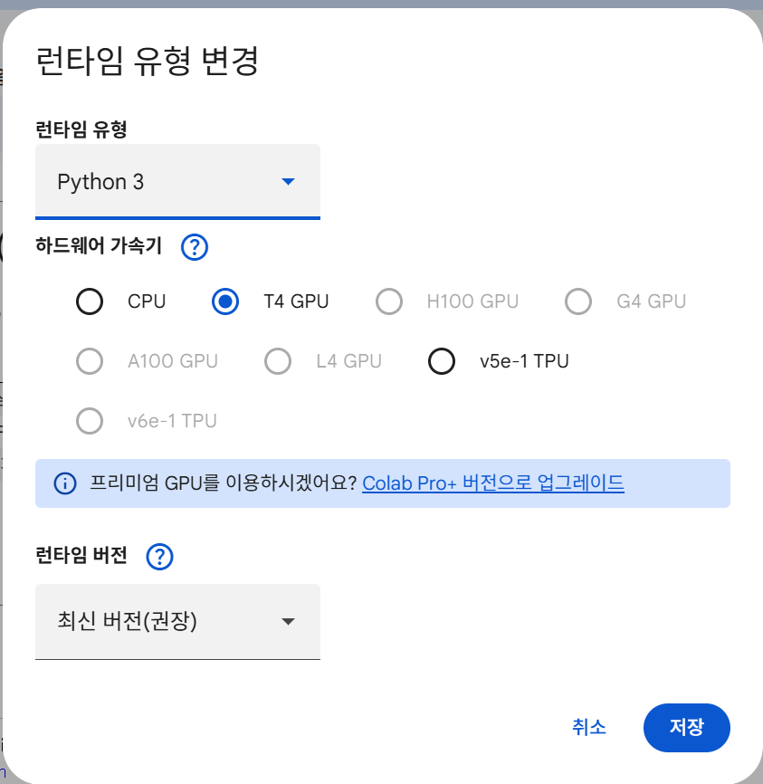
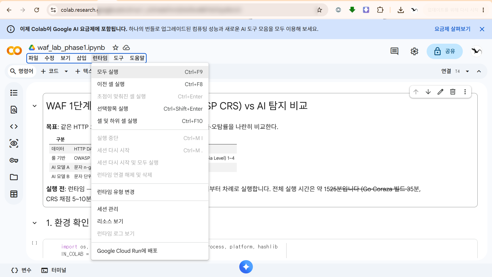
~ 두 개 사이를 취소선으로 바꾼 것이라, 배포 노트북에서는 –로 고침)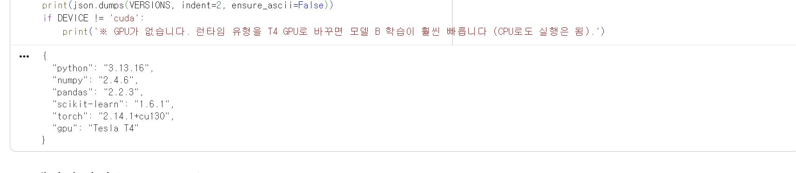
3. 데이터 준비 — 64%가 중복
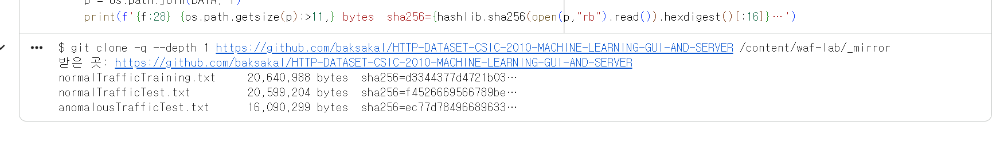
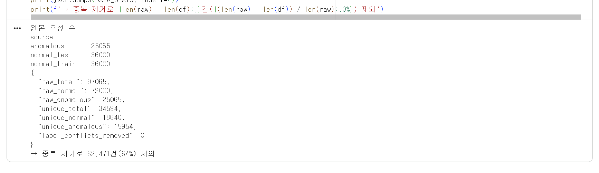
CSIC 2010은 같은 요청이 여러 번 들어 있습니다. 중복을 그대로 두고 나누면 시험 문제와 똑같은 요청이 학습 데이터에 들어가 AI 점수가 부풀려지기 때문에, 먼저 중복을 지우고(정상·비정상 양쪽에 같은 요청이 있는 라벨 충돌은 0건) 정상·비정상 비율을 유지한 채 학습 60 / 검증 20 / 시험 20으로 나눴습니다.
| 집합 | 정상 | 비정상 | 쓰임 |
|---|---|---|---|
| 학습 | 11,184 | 9,572 | AI 모델 학습 |
| 검증 | 3,728 | 3,191 | AI 판정 기준값 선택 ("오탐률 1%" 같은 운영 기준을 여기서 맞춤) |
| 시험 | 3,728 | 3,191 | 모든 비교는 여기서만. 룰도 AI도 처음 보는 요청 |
4. 룰 기반 — Coraza + CRS를 Go로 직접 돌리기
Coraza는 웹 서버 모듈이 아니라 Go 라이브러리라서, CSV로 받은 요청을 하나씩 Coraza 트랜잭션에 넣고 차단 여부 · 이상 점수 · 걸린 룰 ID를 CSV로 쓰는 작은 채점 도구(crsscan, Go 약 190줄)를 노트북 안에서 만들어 빌드했습니다. 실제 WAF처럼 요청 헤더·본문 단계를 모두 거치고, CRS 기본값(이상 점수 5점 이상 차단)을 그대로 씁니다.
| 설정 | 값 |
|---|---|
| 룰 불러오기 | Include @coraza.conf-recommended → @crs-setup.conf.example → @owasp_crs/*.conf (룰 파일을 Go 바이너리에 내장) |
| 편집증 수준(PL) | 1–4를 각각 따로 실행. 높을수록 더 많은 룰이 켜져 많이 잡지만 오탐도 늘어남 |
| 병렬 처리 | Colab CPU 2개에 맞춰 작업자 2개 |
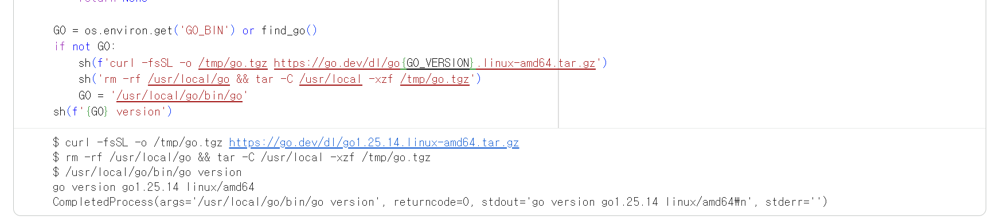
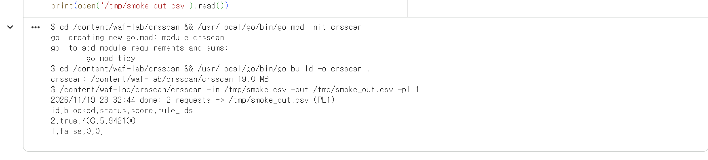
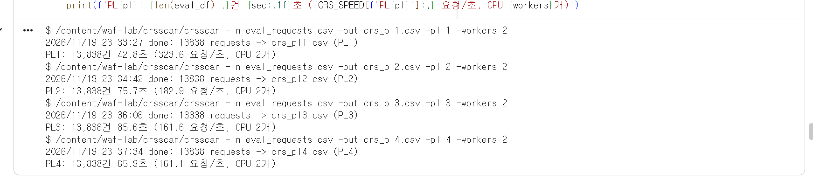
5. AI 모델 학습
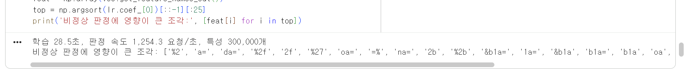
b1a=, 1a=가 보임 — 이 사이트 버튼 이름을 바꾼 요청을 외웠다는 뜻 (6장)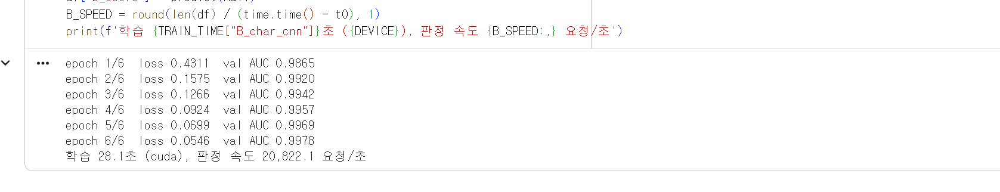
AI는 0–1 사이 점수를 내므로 "몇 점부터 막을지" 기준값이 필요합니다. 기준값은 시험 집합이 아니라 검증 집합에서 "정상 요청의 1% / 0.1% / CRS PL1과 같은 비율까지만 막는다"는 운영 기준에 맞춰 정했습니다. 시험 집합에서 기준값을 고르면 AI에게 답안지를 보여 주는 셈이기 때문입니다.
6. 결과
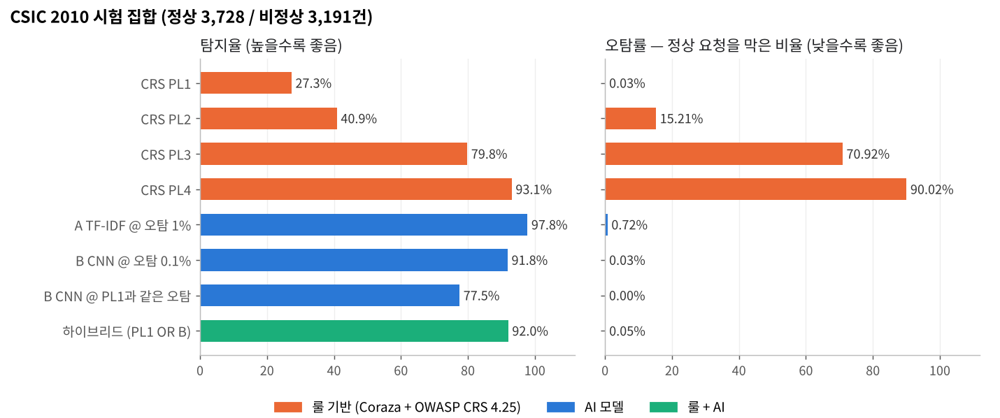
| 방식 | 탐지율 | 오탐률 | 놓친 공격 | 막힌 정상 | 처리 속도 |
|---|---|---|---|---|---|
| CRS PL1 (기본값) | 27.3% | 0.03% | 2,320 | 1 | 324건/초 |
| CRS PL2 | 40.9% | 15.2% | 1,887 | 567 | 183건/초 |
| CRS PL3 | 79.8% | 70.9% | 645 | 2,644 | 162건/초 |
| CRS PL4 | 93.1% | 90.0% | 221 | 3,356 | 161건/초 |
| A TF-IDF @ 오탐 1% | 97.8% | 0.72% | 71 | 27 | 1,254건/초 |
| A TF-IDF @ 오탐 0.1% | 87.6% | 0.11% | 397 | 4 | 1,254건/초 |
| B CNN @ 오탐 1% | 97.4% | 0.80% | 83 | 30 | 20,822건/초 |
| B CNN @ 오탐 0.1% | 91.8% | 0.03% | 260 | 1 | 20,822건/초 |
| B CNN @ CRS PL1과 같은 오탐 | 77.5% | 0.00% | 719 | 0 | 20,822건/초 |
| 하이브리드: CRS PL1 또는 B @ 0.1% | 92.0% | 0.05% | 255 | 2 | — |
시험 집합: 정상 3,728건, 비정상 3,191건. 처리 속도는 환경이 서로 달라 직접 비교하면 안 됩니다 — CRS는 CPU 2개로 요청 하나하나를 WAF 단계 전체에 통과시킨 값, CNN은 GPU에서 묶음 처리한 값입니다.
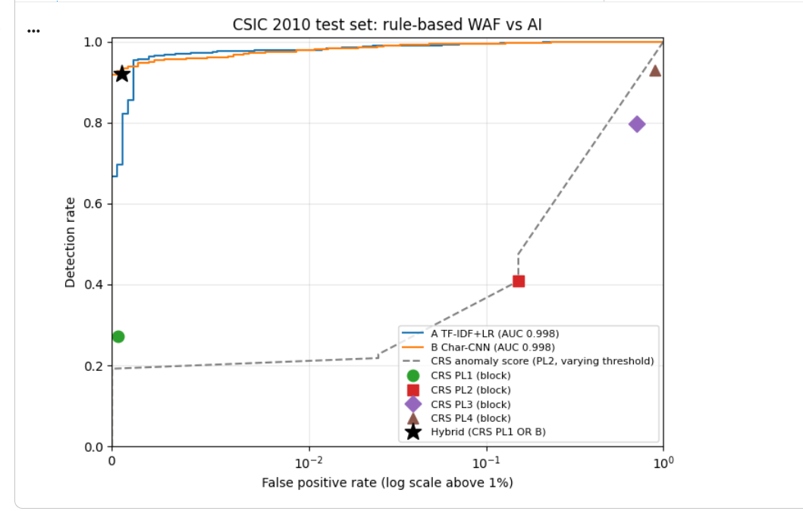
왜 이렇게 차이가 나는가 — 공격 계열별로 나눠 보기
비정상 요청을 CRS PL1이 걸어 둔 룰 ID로 공격 계열을 나눠 보니 차이가 어디서 나왔는지 분명해졌습니다.
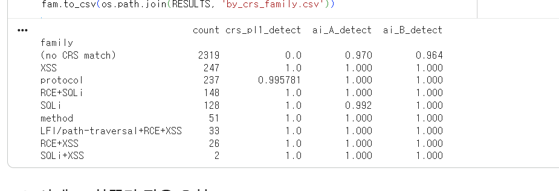
| 계열 | 건수 | CRS PL1 | A | B |
|---|---|---|---|---|
| CRS 룰이 하나도 안 걸린 요청 | 2,319 | 0% | 97.0% | 96.4% |
| XSS | 247 | 100% | 100% | 100% |
| 프로토콜 위반 | 237 | 99.6% | 100% | 100% |
| SQLi · RCE · 경로 탐색 조합 | 337 | 100% | 99.7% | 100% |
| 허용되지 않은 메서드 | 51 | 100% | 100% | 100% |
실제 공격(SQLi · XSS · 명령 실행 · 경로 탐색)은 룰과 AI 모두 거의 100% 잡았습니다. 탐지율 차이는 전부 첫 줄에서 나왔습니다. CSIC 2010의 "비정상"에는 공격뿐 아니라 이 쇼핑몰에서 허용되지 않는 값(버튼 이름 B1= 대신 B1A=, 상품 번호 id=2%2F, 오류 메시지 errorMsg=%2B)을 넣은 파라미터 변조가 많은데, CRS는 어느 사이트에나 쓰는 범용 공격 패턴만 보므로 이런 요청에 반응하지 않는 것이 정상 동작입니다. AI는 이 사이트의 정상 요청 모양을 배웠기 때문에 "평소와 다르다"를 잡아냈습니다 — 모델 A가 중요하게 본 조각에 b1a=가 있는 것이 그 증거입니다.
사례로 확인 (B @ 오탐 1% 기준)
| 경우 | 건수 | 대표 사례와 해석 |
|---|---|---|
| AI만 잡음 | 2,237 | 대부분 vaciar.jsp?B2A=Vaciar+carrito 같은 변조. 다만 그중에는 nombre=any%250D%250ASet-cookie%253A+Tamper%253D… 처럼 이중 URL 인코딩한 헤더 주입(CRLF)도 있었음. 따로 돌려 보니 CRS는 PL1에서 0점, PL2에서도 "다중 인코딩" 룰 920230 하나(3점)만 걸려 통과했고 PL3부터 차단됨 — 기본 설정 룰이 놓친 실제 공격을 AI가 잡은 사례 |
| CRS만 잡음 | 0 | CRS PL1이 잡은 871건은 AI도 모두 잡음 |
| 둘 다 놓침 | 83 | 회원가입·정보 수정처럼 필드가 많은 긴 요청에 글자 하나만 끼운 변조 (Lu*is, cari%3Ftta). 정상 요청과 거의 같아서 AI 점수도 0.1–0.6에 머묾 |
| CRS 오탐 | 1 | 비밀번호가 $infaliblemente(%24)로 시작해 MongoDB 연산자($…) 주입 룰 942290에 걸림. 룰 ID가 남아 원인을 바로 알 수 있음 |
| AI 오탐 | 30 | 정상인 vaciar.jsp?B2=Vaciar+carrito(0.71점), 비밀번호에 %3F · %2B 같은 특수문자가 든 로그인. 변조 요청과 글자 모양이 비슷한데, 왜 막았는지 설명이 남지 않음 |
7. 결론과 해석할 때 주의할 점
| 룰 기반 (CRS) | AI (이번 실험) | |
|---|---|---|
| 잘 잡는 것 | 어느 사이트에나 나타나는 범용 공격 | 이 사이트의 "평소와 다른" 요청 (변조 포함) |
| 필요한 것 | 학습 불필요, 설치 즉시 동작 | 그 사이트의 정상·비정상 데이터, 사이트가 바뀌면 다시 학습 |
| 막은 이유 | 룰 ID로 바로 설명 (예: 942290) | 점수만 남음 — 오탐 원인 찾기가 어려움 |
| 범위 넓히기 | PL을 올리면 오탐이 급증 (PL3 70.9%) → 예외 규칙 튜닝 필요 | 기준값 하나로 탐지율·오탐률을 연속 조절 |
룰 = 범용 공격 차단, AI = 사이트 전용 이상 탐지. 경쟁이 아니라 보완 관계입니다. 실제로 CRS PL1에 CNN을 "또는"으로 붙인 하이브리드는 오탐을 0.05%로 유지하면서 탐지율을 27.3% → 92.0%로 올렸고, 막힌 요청 중 룰에 걸린 것은 룰 ID로 설명할 수 있습니다.
이 숫자를 그대로 일반화하면 안 되는 이유
- AI의 높은 점수는 이 쇼핑몰 전용 성능입니다. 다른 사이트에 그대로 쓰면 이 점수가 나오지 않습니다.
- CSIC 2010은 2010년 데이터라 최신 공격 기법과 정상 트래픽 모양이 다릅니다.
- CRS PL3·PL4의 높은 오탐률은 튜닝(예외 규칙) 없이 켰을 때의 값입니다. 실제 운영에서는 오탐을 확인하며 예외를 추가해 낮춥니다.
- 공격자가 AI를 속이려고 요청을 바꾸는 경우(적대적 회피)는 시험하지 않았습니다.
8. 다음 단계
| 순서 | 할 일 |
|---|---|
| 1 | CRS PL2 오탐 567건을 룰 ID별로 묶어 예외 규칙을 만든 뒤 다시 비교 — "튜닝한 룰" vs AI |
| 2 | CSIC에서 학습한 모델을 다른 데이터셋(공격 위주 페이로드)에 그대로 적용해 일반화 정도 확인 |
| 3 | 2단계 IPS: Suricata + ET Open 룰 vs 흐름 특성 모델 (CIC-IDS2017) — 완료 |
| 4 | 3단계 DDoS: 고정 임계값 룰 vs 시계열·흐름 모델 (CIC-DDoS2019) |